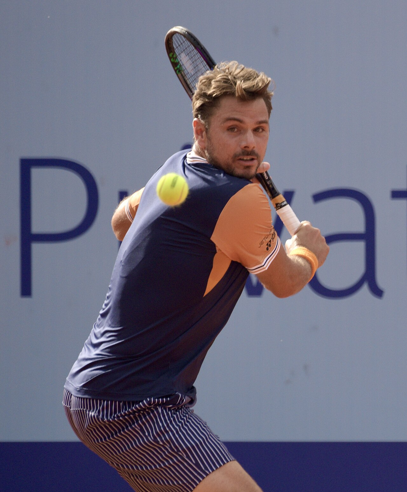

A quinta-feira, 22 de outubro, trouxe resultados importantes para quatro dos principais personagens da semana no tênis mundial. Daniil Medvedev e Elena Rybakina garantiram classificação às quartas de final de seus respectivos torneios, enquanto Stan Wawrinka foi eliminado em Lyon e David Goffin encerrou sua trajetória profissional em simples diante da torcida belga, em Bruxelas.
Os quatro torneios, que estão sendo disputados entre 19 e 25 de outubro, carregam significados diferentes na reta final de 2026. Para alguns jogadores, representam oportunidades de conquistar títulos e somar pontos no ranking. Para outros, são os últimos compromissos de carreiras que atravessaram diferentes gerações do circuito.
Rybakina avança e terá surpresa polonesa nas quartas
A número 1 do mundo, Elena Rybakina, segue na defesa do título do WTA 500 de Ningbo, na China. Nesta quinta-feira, a cazaque garantiu sua classificação às quartas de final após a desistência de Polina Kudermetova, que abandonou o confronto quando perdia por 5 a 0 no primeiro set.
A partida durou aproximadamente 30 minutos. Kudermetova precisou de atendimento médico durante o confronto e não conseguiu continuar. Rybakina avançou sem precisar completar o primeiro set, em uma estreia curta na chave principal, já que havia recebido folga na rodada inicial.
Sua próxima adversária será Katarzyna Kawa, da Polônia, que protagonizou uma das surpresas da competição ao eliminar a suíça Belinda Bencic, quinta cabeça de chave.
Aos 33 anos e ocupando a 128ª posição do ranking mundial, Kawa conquistou sua primeira vitória sobre uma adversária do top 20. O resultado coloca a polonesa diante de um dos maiores desafios de sua carreira..
Rybakina conquistou Ningbo em 2025 e chegou à edição atual já classificada para o WTA Finals. A competição também marca seu retorno após problemas físicos que limitaram sua participação em torneios anteriores da gira asiática.
Medvedev vence e segue firme em Almaty
Daniil Medvedev também garantiu presença nas quartas de final do ATP 250 de Almaty, no Cazaquistão. O russo, principal cabeça de chave e atual campeão do torneio, derrotou o japonês Sho Shimabukuro por 6/2 e 6/1 nesta quinta-feira.
A vitória foi construída em apenas 52 minutos, com Medvedev apresentando grande eficiência no saque e nas oportunidades de quebra. O russo anotou sete aces e converteu cinco dos dez break points que teve durante o confronto.
Seu próximo adversário será o francês Terence Atmane, que precisou de três tie-breaks para superar o italiano Mattia Bellucci.
Campeão do US Open de 2021 e ex-líder do ranking mundial, Medvedev encontrou nas quadras duras cobertas um cenário favorável ao estilo de jogo que marcou sua carreira: devoluções profundas, excelente movimentação defensiva e capacidade de controlar longas trocas de bola.
Além da busca por outro troféu, o ATP 250 de Almaty tem importância na corrida por pontos antes do encerramento da temporada e do ATP Finals, programado para novembro, em Turim.
Wawrinka é eliminado e prepara última apresentação na Basileia
Stan Wawrinka encerrou sua participação no ATP 250 de Lyon nesta quinta-feira. O suíço de 41 anos foi derrotado pelo italiano Flavio Cobolli, principal cabeça de chave, nas oitavas de final.
A eliminação aconteceu um dia depois de uma das partidas mais emocionantes da competição. Na quarta-feira, Wawrinka havia superado o espanhol Martín Landaluce, em um confronto de 2h46.
Contra Cobolli, o veterano não conseguiu repetir a resistência apresentada na estreia. O italiano controlou os momentos decisivos, venceu em sets diretos e avançou às quartas.
Mesmo com a derrota, Lyon representa um capítulo importante da despedida de Wawrinka. Campeão de três torneios de Grand Slam — Australian Open de 2014, Roland Garros de 2015 e US Open de 2016 —, o suíço se prepara para encerrar sua carreira profissional diante da torcida de seu país.
Seu último torneio está programado para a próxima semana, no ATP 500 da Basileia, na Suíça.
Goffin encerra carreira em simples diante da torcida belga
Em Bruxelas, a quinta-feira foi marcada por uma despedida. David Goffin disputou sua última partida profissional de simples e acabou eliminado pelo norte-americano Alex Michelsen, nas oitavas de final do ATP 250 de Bruxelas.
Aos 35 anos, o belga havia escolhido o torneio de seu país para encerrar uma trajetória de 17 anos no circuito.
Na quarta-feira, Goffin conseguiu prolongar a despedida ao derrotar o suíço Rémy Bertola, de virada. A vitória garantiu mais uma apresentação diante do público local, mas Michelsen impediu a continuidade da campanha individual.
Ex-número 7 do ranking mundial, Goffin conquistou seis títulos ATP e viveu um de seus momentos mais marcantes no ATP Finals de 2017. Naquela edição, derrotou Rafael Nadal e Roger Federer antes de perder a decisão para Grigor Dimitrov.
Embora tenha encerrado sua carreira em simples, o belga também avançou às quartas de final da chave de duplas em Bruxelas, ao lado do compatriota Raphaël Collignon. Os dois tinham confronto programado contra Constantin Frantzen e Robert Galloway nesta quinta-feira.
A despedida de Goffin representa o encerramento de uma geração importante para o tênis belga. Mais do que os troféus, sua carreira ficou marcada pela regularidade, inteligência tática e capacidade de competir em alto nível contra adversários fisicamente mais poderosos.
A reta final dos quatro torneios
Com as atualizações desta quinta-feira, a situação dos protagonistas ficou definida:
- Elena Rybakina — Enfrenta Katarzyna Kawa na sexta-feira, 23 de outubro.
- Daniil Medvedev — Enfrenta Terence Atmane na sexta-feira, 23 de outubro.
- Stan Wawrinka — eliminado nas oitavas de final de Lyon.
- David Goffin — eliminado nas oitavas de final de simples em Bruxelas, encerrando sua carreira individual.
Próximos jogos: horários e onde assistir
Elena Rybakina x Katarzyna Kawa — WTA 500 de Ningbo
- Data: sexta-feira, 23 de outubro.
- Fase: quartas de final.
- Horário: não antes das 8h (Brasília).
- Onde assistir: Disney+ Premium
Daniil Medvedev x Terence Atmane — ATP 250 de Almaty
- Data: sexta-feira, 23 de outubro.
- Fase: quartas de final.
- Horário: 06:10h (Brasília).
- Onde assistir: Disney+ Premium
As quatro competições têm suas finais programadas para domingo, 25 de outubro, antes de o calendário masculino avançar para torneios como Basileia, Viena e o Masters 1000 de Paris.
Entre classificações, eliminações e homenagens, a reta final de outubro reúne aquilo que torna o tênis tão particular: cada partida pode representar um passo em direção a uma conquista ou o último capítulo de uma grande carreira